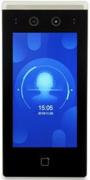

PK-FIT5 系列人臉辨識終端
FACE RECOGNITION TERMINAL
- 7 吋高解析度觸控螢幕（1024 × 600）
- 2MP 高解析度廣角雙鏡頭
- 人臉反應時間 < 0.2 秒，1:1 / 1:N 雙模辨識
- 5,000 筆人臉資料庫，50,000 筆事件記錄
- IP65 防水防塵，工作溫度 -30°C ~ +60°C
- 支援人臉與卡片雙模認證
智慧終端
FRM System 搭配無敵科技自有的 FRT 人臉辨識終端與智慧刷卡機， 外型俐落、辨識精準、防水防塵，從室內到戶外都能穩定運作。

FACE RECOGNITION TERMINAL
CARD READER TERMINAL
應用場景
無論是哪種規模的場域，FRM System 都能因應您的需求量身配置。
出入管理、員工考勤、會議室簽到
住戶通行、訪客登記、車輛進出
多廠區管理、承攬商管控、安全告警
學生出勤、教師簽到、家長接送辨識
人員出入、訪客追蹤、管制區存取